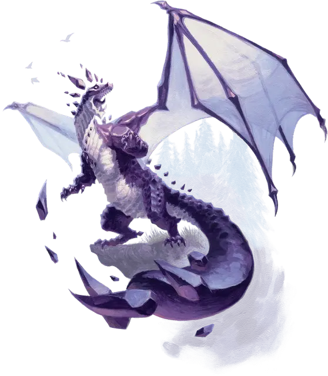

Вирмлинг аметистового дракона
Amethyst Dragon Wyrmling
Средний Дракон (Самоцветный), любое нейтральное мировоззрение

Класс Доспеха 17 (природный доспех)
Хиты 75 (10к8 + 30)
Скорость 30 футов, плавая 30 футов, летая 60 футов (парит)
| мод | спас | ||
|---|---|---|---|
| СИЛ | 19 | +4 | +4 |
| ЛОВ | 10 | +0 | +2 |
| ТЕЛ | 17 | +3 | +5 |
| мод | спас | ||
|---|---|---|---|
| ИНТ | 16 | +3 | +3 |
| МДР | 13 | +1 | +3 |
| ХАР | 17 | +3 | +5 |
Навыки Восприятие +5, Магия +7, Скрытность +2, Убеждение +7
Сопротивление урону психическая энергия, силовое поле
Иммунитет к состояниям сбивание с ног, испуг
Чувства слепое зрение 10 футов, тёмное зрение 120 футов, пассивное Восприятие 15
Языки Драконий, Телепатия 120 фт.
Опасность 4 (1100 опыта)
Бонус мастерства +2
Особенности
Амфибия. Дракон может дышать как воздухом, так и водой.
Персонализация дракона. Как уже говорилось в «Руководстве Мастера», вы можете настроить блок статистики любого дракона, чтобы отразить его уникальный характер. Незначительные изменения, такие как приведенные ниже, легко сделать, и они не влияют на ПО дракона. (Fizban's Treasury of Dragons)
Языки. Большинство драконов предпочитают говорить на Драконьем, но для общения с союзниками и приспешниками изучают Общий. Но, учитывая высокий Интеллект и продолжительный срок жизни, драконы могут легко выучить дополнительные языки. Вы можете добавить языки в блок статистики дракона.
Навыки. Большинство драконов владеют навыками Восприятие и Скрытность, а многие драконы владеют дополнительными навыками. Как и в случае с языками, вы можете изменить список навыков дракона (даже удвоить бонус мастерства), чтобы отразить его интересы и занятия. Вы также можете наделить дракона владениями инструментами, особенно если дракон проводит время в гуманоидной форме.
Другие черты и действия. Вы можете заимствовать черты и действия у других монстров, чтобы придать дракону уникальную изюминку. Рассмотрим эти примеры:
Изменение формы. Вы можете решить, что дракон приобретает это действие в более раннем возрасте, чем обычно, особенно если вы хотите представить в своей кампании дракона в гуманоидной форме. (См. металлические драконы).
Поглощение урона. Вы можете решить, что красный или золотой дракон не только не получает урон от огня, но и исцеляется от него. (См. мясной голем [flesh golem]).
Облёт. Дракон - проворный летун, быстро вылетающий из зоны досягаемости врагов. (См. перитон [peryton]).
Подражание. Изображение персонажей или их союзников может стать забавным трюком для хитрого дракона. (См. кенку [kenku]).
Омоложение. Вы можете решить, что драконы в вашей кампании, будучи неотъемлемой частью Материального плана, почти невозможно уничтожить. Жизненная сущность дракона может храниться в яйце, из которого он появился на свет, в его кладе или в пещерном зале в центре мира, так же как сущность лича спрятана в филактерии. (См. лич [lich]).
Особые чувства. У большинства драконов есть слепое зрение и темное зрение. Вы можете улучшить зрение до истинного зрения или наделить дракона скоростью рытья или чувством вибрации. (См. зрение и свет).
Прокладывание туннеля. Эта особенность может быть присуща любому дракону, обладающему скоростью копания - он может двигаться сквозь твёрдую породу, оставляя за собой туннель. (См. бурый увалень [umber hulk]).
Действия
Укус. Рукопашная атака оружием: +6 к попаданию, досягаемость 5 фт., одна цель. Попадание: Колющий урон 9 (1к10+4) плюс 4 (1к8) урона силовым полем.
Использование заклинаний (Псионика). Дракон накладывает одно из следующих заклинаний, не требующее компонентов заклинания и использующее Интеллект в качестве базовой характеристики (Сл спасброска от заклинания 13):
• 1/день каждое: защита от зла и добра [protection from evil and good], Тензеров парящий диск [Tenser’s floating disk], невидимый слуга [unseen servant].
Дыхание сингулярности (перезарядка 5–6). Дракон создает сияющий шарик сил гравитации во рту, после чего высвобождает энергию 15-футовым конусом. Все существа в этой области должны совершить спасбросок Силы Сл 13, получая урон силовым полем 22 (5к8) при провале, и их скорость становится равна 0 до начала следующего хода дракона. В случае успешного спасброска, существо получает вдвое меньше урона, и его скорость не уменьшается.
Описание
Аметистовые драконы, самые могущественные из самоцветных драконов, изучают и псионически манипулируют фундаментальными принципами мультивселенной, от силы гравитации до эманаций Внешних планов. Их врожденная псионика дает им возможность контролировать влияние физических законов. Они бросают вызов гравитации, летая не только на своих огромных крыльях, а сила гравитации питает как их разрушительное дыхательное оружие, так и взрывающиеся аметистовые кристаллы, которыми они плюются в своих врагов.
Королевский пурпур. Когда аметистовый дракон только вылупляется, его чешуя имеет тусклый, непрозрачный фиолетовый цвет. По мере роста дракона его чешуя, рога и перепонки крыльев становятся более яркими и прозрачными. Когда дракон полностью созревает, его чешуя напоминает насыщенно-фиолетовые кристаллы аметиста, преломляя свет и приобретая внутреннее сияние. Зрачки с возрастом тускнеют, и глаза древнего дракона становятся похожими на светящиеся белые или бледно-лавандовые шары. Кристаллические рога, напоминающие куски аметиста, висят у них за головой, удерживаемые телекинетической силой и меняющиеся в зависимости от настроения.
Космологические исследования. Многие аметистовые драконы очарованы существованием других миров на Материальном плане, и особенно тем, как отдельные драконы проявляют уникальные отголоски в этих мирах. Они также стремятся понять космические силы, исходящие из Внешних планов, изучая противоборствующие приливы и отливы добра и зла, хаоса и порядка, чтобы иметь возможность дать совет тем, у кого хватит мудрости его принять.
Аметистовые драконы обращают особое внимание на вторжения Дальних пределов в Материальный план. Они ненавидят порчу, которая сопровождает такие вторжения в мир, поэтому являются ярыми противниками Дальних пределов и любых существ, искаженных его прикосновением. Однако, как ни странно, их интригуют и увлекают фламфы. Эти аберрации, противостоящие насилию свежевателей разума и других злых аберраций, напоминают аметистовым драконам, что союзников можно найти в самых странных местах.
Тайные магические знания. Помимо материальных благ, аметистовые драконы с удовольствием собирают знания и магию, касающиеся природы плоскостей бытия, космических сил и дальних миров. Они ценят сокровища из разных миров Материального плана, особенно магические предметы и произведения искусства, которые подчеркивают уникальную природу разных миров. Магические предметы, позволяющие телепортироваться или путешествовать между плоскостями, книги заклинаний, наполненные подобной магией, и трактаты, исследующие природу мультивселенной, составляют центральную часть клада аметистового дракона.